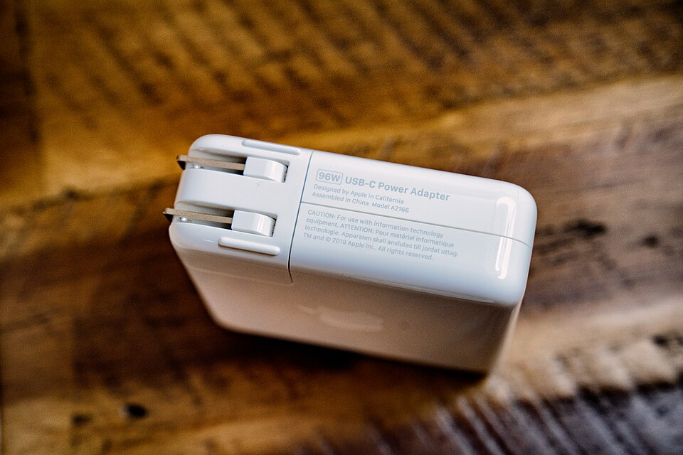

Triage and service a Dell Latitude 5420
Run Dell’s no-power, no-POST, no-video and no-boot comparisons, then complete a model-matched repair using service and diagnostics documentation.
Confirm this is the 2021 Latitude 5420
Use the private service tag or regulatory model to confirm your manual. The 2021 Latitude 5420, older E5420 and Latitude 5420 Rugged use different manuals. The older Dell photograph is a family comparison. The 5420 link gives the exact internal layouts and removal order.

Photo by Siarhei Besarab, scaled with on-page callouts. Original photo · CC BY-SA 4.0.


Photo by Tony Webster, scaled with on-page callouts. Original photo · CC BY 2.0.
.jpg){kind=link}
Dell demonstrates battery and adapter diagnostics before parts replacement.
Capture the earliest reliable evidence
- Start closed. Use the documented compatible charger and verify observable charging indications. Note the LED pattern, including which colours and how many pulses, then look it up in the matching manual rather than using a general Internet code table.
- If the laptop powers on with a blank screen, use Dell’s documented LCD BIST path for the model, typically D held while pressing power. Record whether it shows clean solid colours. That checks a local display test path; compare normal boot and an external display before declaring the entire display assembly healthy.
- If the logo or F12 menu appears, select Diagnostics for the supported preboot path. Collect the reported component, error and validation code when provided. Check whether firmware sees storage before running Windows startup repair.
Run one authorized module repair
Choose a proven faulty removable module on the spare, for example a battery that fails the vendor test or a speaker that fails a repeatable local test. Use the exact 5420 manual’s Service Mode or battery-disconnection instructions for the condition and part. Photograph cable routes and track screw lengths. Inspect matching identifiers on the replacement before connecting. Execute the Dell procedure with power isolated, then repeat the original check, run diagnostics again and exercise the adjacent function you touched. For a no-power job with failure still on the logic board use P87 · Find why a USB-C laptop will not charge, P97 · Find which branch is shorted on a laptop board and P123 · Find a missing enable or power-good signal before swapping a board.
Related lesson and source material
T57 · How laptop power, firmware, storage and operating systems meet.